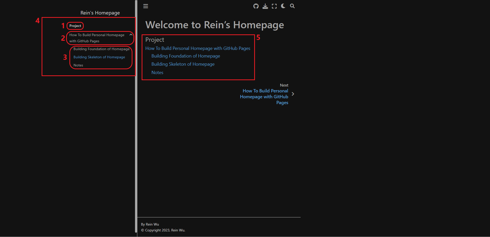
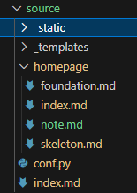
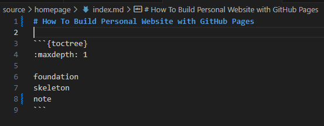

Building Skeleton of Homepage#
Add some margin content to a page#
You can learn how to add some margin content to a page from the official turtioral
Build hierarchy of pages by toctree#
The basic syntax of toctree is as follow:
1```{toctree}
2properties...
3
4children pages...
5```

This page is the homepage of the website. The corresponding file is “source/index.md”. This homepage is also the root of all blocks. Each block is the root of a toctree. The section 4 describes that my website contains a block and the block contains a 2 levels toctree. The toctree consists of a caption (section 1), a level 1 page (section 2) and three level 2 pages (section 3).


To build the toctree structure, I add the following code into the “source/index.md”.
“:caption: Project” make a block with caption “Project”
:maxdepth: 2 represents that this block contains a 2 levels toctree.
homepage/index indicate where the child page is. (This child is level 1 pages.)
Note
A website can be composed of several blocks.
A block can be composed of several level 1 pages.
A level i page can consist several level i+1 pages.
Tip
If you don’t want to show the toctree structure in main page (block 5), you can add a properity “:hidden:”.

According to the previous setting, we know the level 1 page is “source/homepage/index.md” The title “How To Build Personal Website with GitHub Pages” is the heading 1 of this file. To configure the other three level 2 pages, you have to add a toctree description in this file.
Configuration of level 2 pages is similar to configure level page 1. Hence I ommit the explanation of this part.
Tip
A toctree can be more than 2 levels. The logic of configuration is the smae.